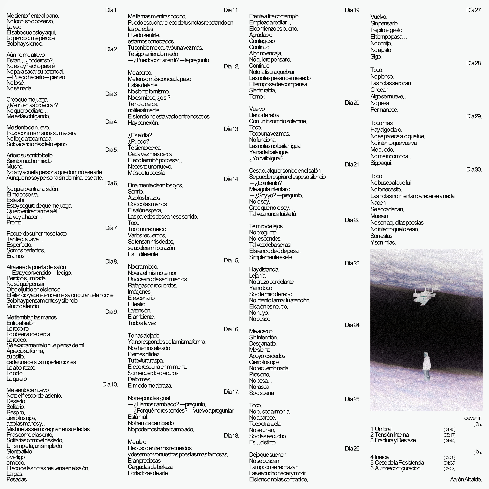

El álbum
Seis piezas que recorren el mismo proceso que el diario. Cada una corresponde a un tramo concreto del relato; los números indican los días en los que se sitúa cada fragmento.
I. Umbral — Días 1–4
El inicio. El peso del pasado paraliza.
II. Tensión Interna — Días 5–8
Comparación constante con lo que fue.
III. Fractura y Desfase — Días 9–16
El sonido y la identidad dejan de coincidir.
IV. Inercia — Días 17–21
Repetición, esfuerzo, desgaste.
V. Cese de la Resistencia — Días 22–27
Abandono de la exigencia.
VI. Autorreconfiguración — Días 28–30
Lo nuevo aparece. Y es propio.

Devenir
Álbum · 6 piezas · 2025

Día 1.
Me siento frente al piano.
No toco, solo observo.
Lo veo.
Él sabe que estoy aquí.
Lo percibo, me percibe.
Solo hay silencio.
Día 2.
Aún no me atrevo.
Es tan… ¿poderoso?
No estoy hecho para él.
No para sacar su potencial.
—Puedo hacerlo— pienso.
No lo sé.
No sé nada.
Día 3.
Creo que me juzga.
¿Me intentas provocar?
No quiero odiarte…
Me estás obligando.
Día 4.
Me siento de nuevo.
Rozo con mis manos su madera.
No llego a tocar nada.
Solo acaricio desde lo lejano.
II
Tensión Interna
Días 5 – 8
Día 5.
Añoro su sonido bello.
Siento mucho miedo.
Mucho.
No soy aquella persona que dominó ese arte.
Aunque no soy persona sin dominar ese arte.
Día 6.
No quiero entrar al salón.
Él me observa.
Está ahí.
Estoy seguro de que me juzga.
Quiero enfrentarme a él.
Lo voy a hacer…
Pronto.
Día 7.
Recuerdo su hermoso tacto.
Tan liso, suave…
Es perfecto.
Somos perfectos.
Éramos…
Día 8.
Atravieso la puerta del salón.
—Estoy convencido —le digo.
Percibo su mirada.
No sé qué pensar.
Oigo el juicio en el silencio.
El silencio yace eterno en el salón durante la noche.
Solo hay pensamientos y silencio.
Mucho silencio.
III
Fractura y Desfase
Días 9 – 16
Día 9.
Me tiemblan las manos.
Entro al salón.
Lo recorro.
Lo observo de cerca.
Lo rodeo.
Sé exactamente lo que piensa de mí.
Aprecio su forma,
su estilo,
cada una de sus imperfecciones.
Lo aborrezco.
Lo odio.
Lo quiero.
Día 10.
Me siento de nuevo.
Noto el frescor del asiento.
Desierto.
Solitario.
Respiro,
cierro los ojos,
alzo las manos y…
Mis huellas se impregnan en sus teclas.
Frías como el asiento,
Solitarias como el desierto.
Un simple fa, un simple do…
Siento alivio
o vértigo
o miedo.
El eco de las notas resuena en el salón.
Largas.
Pesadas.
Día 11.
Me llamas mientras cocino.
Puedo escuchar el eco de tus notas rebotando en las paredes.
Puedo sentirte,
estamos conectados.
Tu sonido me cautivó una vez más.
Te sigo teniendo miedo.
—¿Puedo confiar en ti? —le pregunto.
Día 12.
Me acerco.
Me tenso más con cada paso.
Estás delante.
No siento lo mismo.
No es miedo, ¿o sí?
Te noto cerca,
no literalmente.
El silencio no está vacío entre nosotros.
Hay conexión.
Día 13.
¿Es el día?
¿Puedo?
Te siento cerca.
Cada vez más cerca.
El eco terminó por cesar…
Necesito uno nuevo.
Más de tu poesía.
Día 14.
Finalmente cierro los ojos.
Sonrío.
Alzo los brazos.
Coloco las manos.
El salón espera.
Las paredes desean ese sonido.
Toco.
Toco un recuerdo.
Varios recuerdos.
Se tensan mis dedos,
se acelera mi corazón.
Es… diferente.
Día 15.
No era miedo.
No era el mismo temor.
Un océano de sentimientos…
Ráfagas de recuerdos.
Imágenes.
El escenario.
El teatro.
La tensión.
El ambiente.
Todo a la vez.
Día 16.
Te has alejado.
Ya no respondes de la misma forma.
Nos hemos alejado.
Pierdes nitidez.
Tu textura raspa.
El eco resuena en mi mente.
Son recuerdos oscuros.
Deformes.
El miedo me abraza.
Día 17.
No respondes igual.
—¿Hemos cambiado? —pregunto.
—¿Por qué no respondes? —vuelvo a preguntar.
Está mal.
No hemos cambiado.
No podemos haber cambiado.
Día 18.
Me alejo.
Rebusco entre mis recuerdos
y desempolvo nuestras poesías más famosas.
Eran preciosas.
Cargadas de belleza.
Portadoras de arte.
Día 19.
Frente a ti te contemplo.
Empiezo a recitar…
El comienzo es bueno.
Agradable.
Contagioso.
Continuo.
Algo no encaja.
No quiero pensarlo.
Continúo.
Noto la fisura quebrar.
Las notas pesan demasiado.
El tempo se descompensa.
Siento rabia.
Temor.
Día 20.
Vuelvo.
Lleno de rabia.
Con un insomnio solemne.
Toco.
Toco una vez más.
No funciona.
Las notas no bailan igual.
Ya nada baila igual.
¿Yo bailo igual?
Día 21.
Cesa cualquier sonido en el salón.
Se puede respirar el espeso silencio.
—¿Lo intento?
Me agota intentarlo.
—¿Soy yo? —pregunto.
No lo soy.
Creo que no lo soy…
Tal vez nunca fuiste tú.
V
Cese de la Resistencia
Días 22 – 27
Día 22.
Te miro de lejos.
No pregunto.
No respondes.
Tal vez deba ser así.
El silencio dejó de pesar.
Simplemente existe.
Día 23.
Hay distancia.
Lejanía.
No cruzo por delante.
Ya no toco.
Solo te miro de reojo.
No intento llamar tu atención.
El salón es neutro.
No huyo.
No busco.
Día 24.
Me acerco.
Sin intención.
Desganado.
Me siento.
Apoyo los dedos.
Cierro los ojos.
No recuerdo nada.
Presiono.
No pesa…
No raspa.
Solo suena.
Día 25.
Toco.
No busco armonía.
No aparece.
Toco otra tecla.
No se unen,
Solo las escucho.
Es… distinto.
Día 26.
Dejo que suenen.
No se buscan.
Tampoco se rechazan.
Las escucho nacer y morir.
El silencio no las contradice.
Día 27.
Vuelvo.
Sin pensarlo.
Repito el gesto.
El tiempo pasa…
No corrijo.
No ajusto.
Sigo.
VI
Autorreconfiguración
Días 28 – 30
Día 28.
Toco.
No pienso.
Las notas se rozan.
Chocan.
Algo se mueve…
No pesa.
Permanece.
Día 29.
Toco más.
Hay algo claro.
No se parece a lo que fue.
No intento que vuelva.
Me quedo.
No me incomoda…
Sigo aquí.
Día 30.
Toco.
No busco al que fui.
No lo necesito.
Las notas no intentan parecerse a nada.
Nacen.
Se encadenan.
Mueren.
No son aquellas poesías.
No intento que lo sean.
Son estas.
Y son mías.